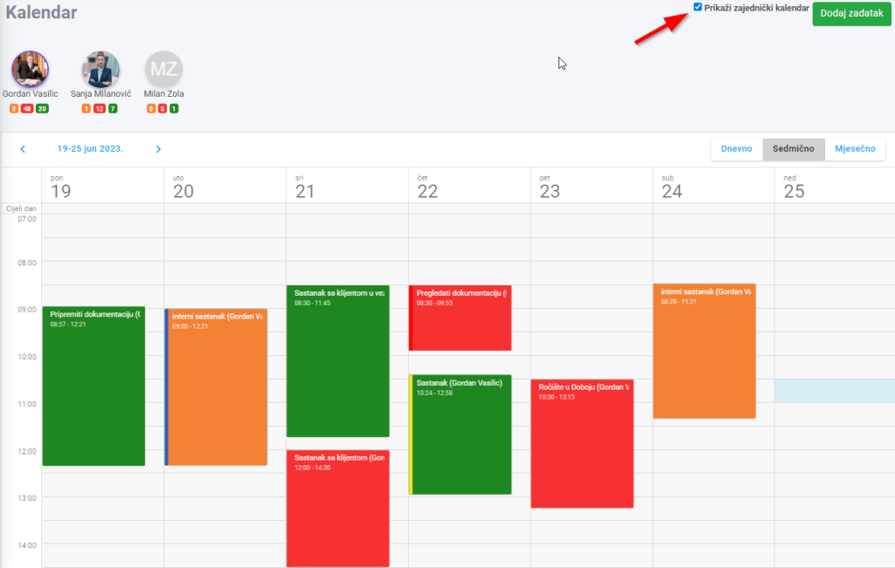
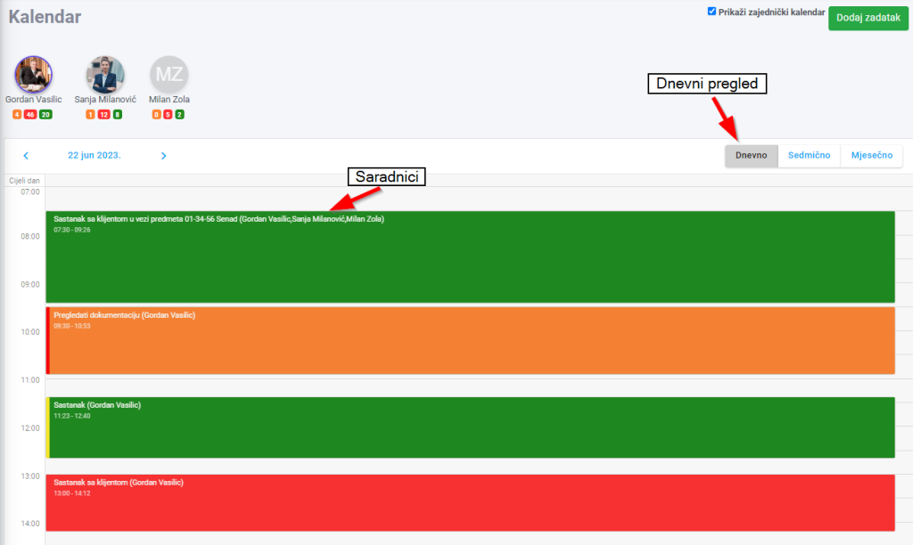
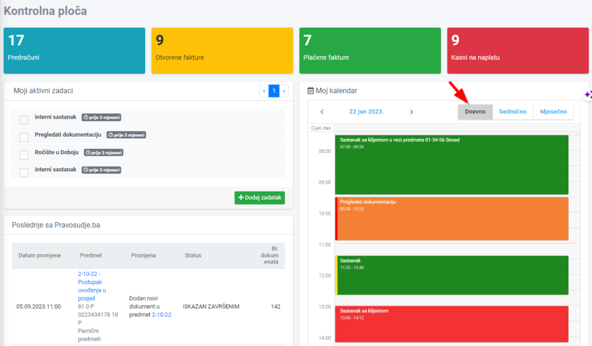
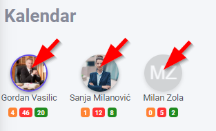

Kalendar možete prilagoditi svoji potrebama, te možete birati da li su kalendari saradnika posebno prikazani ili su obaveze svih saradnika u jednom kalendaru. Potrebno je samo da izaberete željeni pregled u gornjem desnom uglu unutar kalendara:

Ako je izabran zajednički kalendar, saradnici će biti navedeni nakon naziva predmeta. Takođe, od sada možete izabrati dnevni pregled unutar kalendara:

Dnevni pregled možete izabrati i unutar Kontrolne ploče:

Saradnike možete sakriti/prikazati unutar kalendara klikom na ikonu saradnika iznad samog kalendara:
